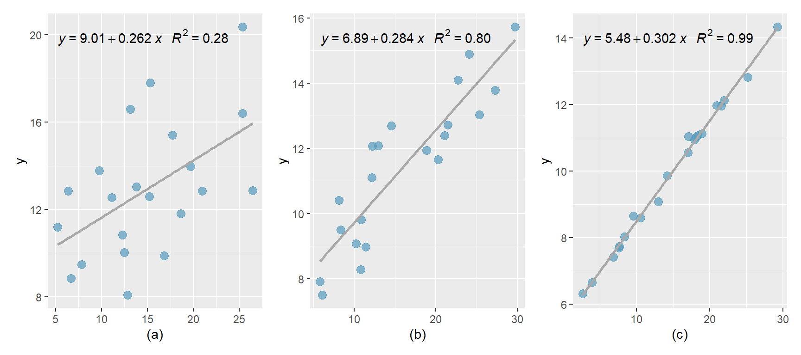
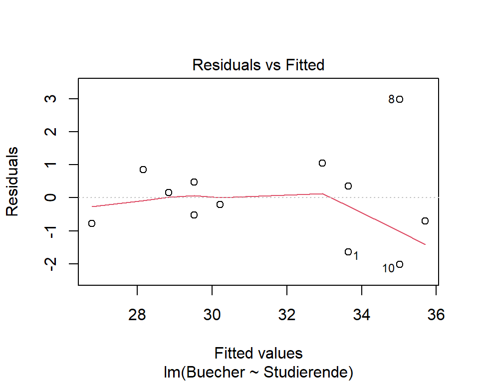
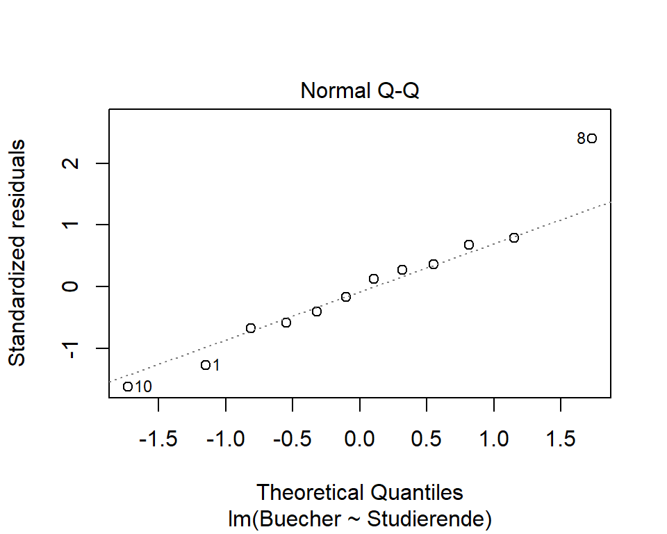
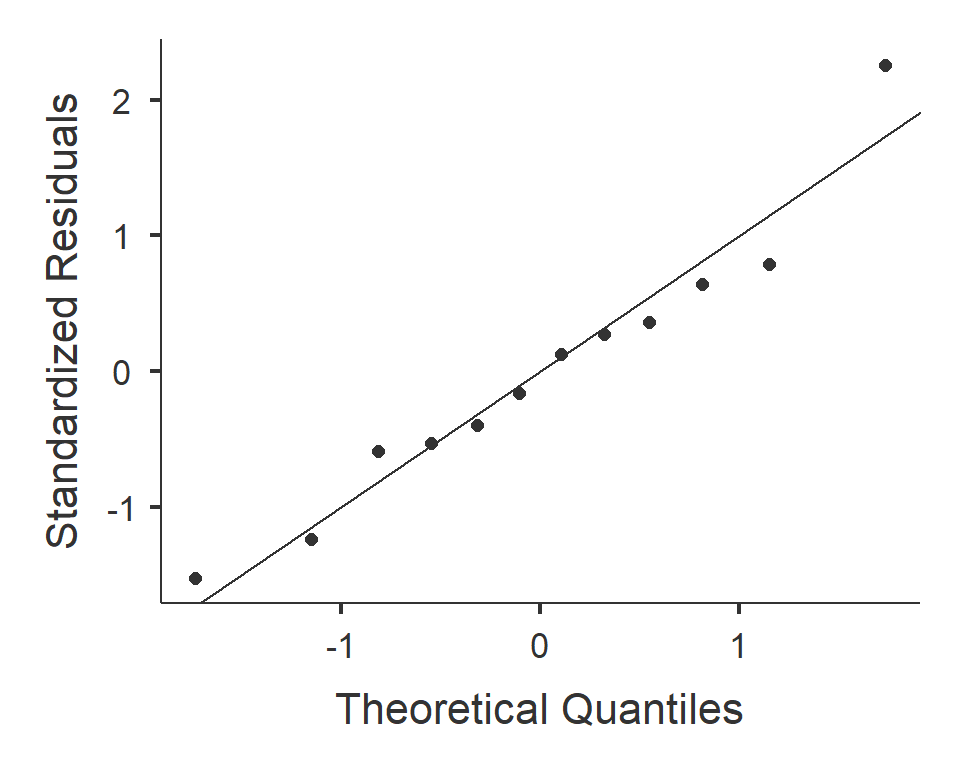
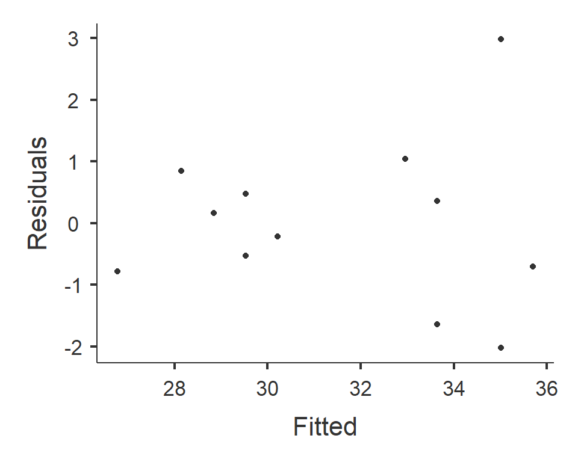
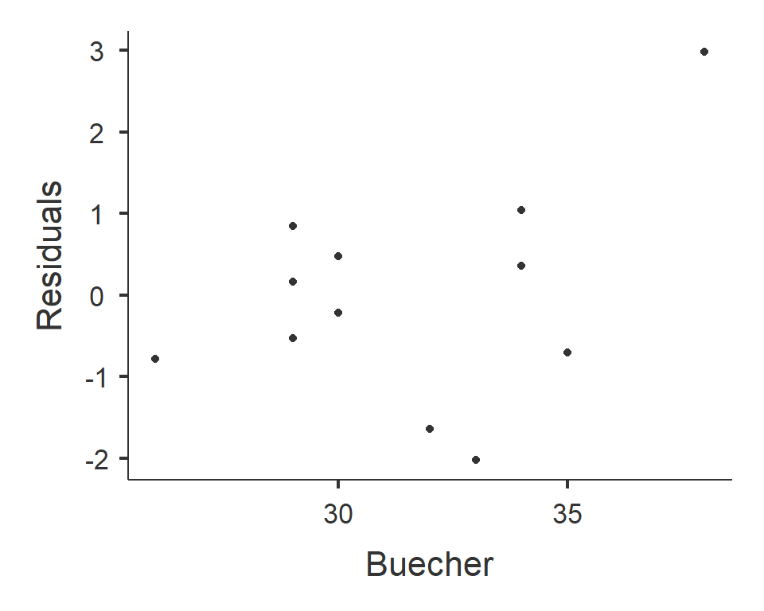
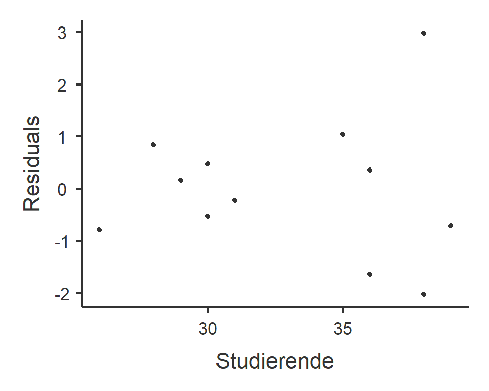
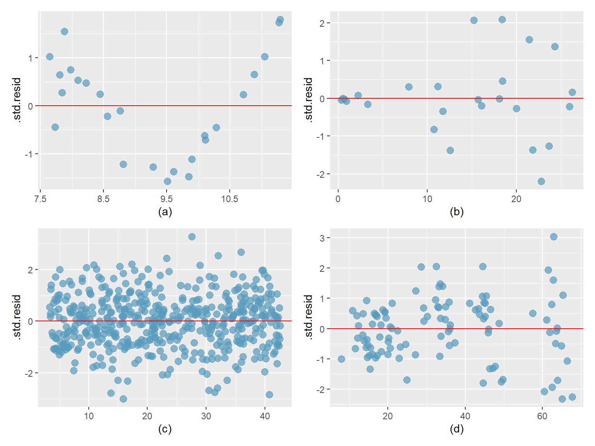

8 Einfache lineare Regression
Hat man einen linearen Zusammenhang zwischen zwei Variablen entdeckt, möchte man diesen Zusammenhang präzise beschreiben und quantifizieren. Das Ziel der Regressionsanalyse ist es, die Gerade anzugeben, die den linearen Zusammenhang am besten beschreibt. Im Unterschied zur Korrelation wird hier ein gerichteter Zusammenhang untersucht. Wir möchten eine Variable y, in unserem Beispiel der Kalorienverbrauch, durch eine Variable x, die Laufgeschwindigkeit vorhersagen.
8.1 Lernziele
- Definiere die erklärende Variable als unabhängige Variable (Prädiktor) und die Antwortvariable als abhängige Variable.
- Erstelle Streudiagramme so, dass die unabhängige Variable auf der x-Achse und die abhängige Variable auf der y-Achse liegt.
- Wenn x die unabhängige und y die abhängige Variable ist, wird das lineare Regressionsmodell gebildet als
\[y = \beta_0 + \beta_1x\] wobei der Koeffizient \(\beta_0\) den Schnittpunkt mit der y-Achse (Achsenabschnitt, engl. intercept) und der Koeffizient \(\beta_1\) die Steigung der Geraden beschreibt. Die Punktschätzungen (aus den beobachteten Daten) für \(\beta_0\) und \(\beta_1\) sind \(b_0\) bzw. \(b_1\).
- Definiere Residuen \(e\) als Differenz zwischen den beobachteten \(y\) und den durch das Modell vorhergesagten (gefitteten) \(\hat{y}\) Werten der abhängigen Variablen.
- Definiere die Kleinstquadratlinie (Regressionsgerade) als die Linie, welche die Summe der quadrierten Residuen minimiert. Du kannst die Bedingungen dafür nennen, dass die Konfidenzintervalle und Hypothesentests für die Koeffizienten der Kleinstquadratlinie gültig sind:
- Linearität
- Normalverteilung der Residuen
- Konstante Variabilität (Homoskedastizität)
- Linearität
- Interpretiere die Steigung \(b_1\) wie folgt
- “Für jede Einheit um die sich der Wert x erhöht, erwarten wir, dass y im Durchschnitt um \(|b_1|\) Einheiten grösser bzw. kleiner wird.”
- Beachte dass es vom Vorzeichen von \(b_1\) abhängig ist, ob der Wert der abhängigen Variable zu- oder abnimmt.
- “Für jede Einheit um die sich der Wert x erhöht, erwarten wir, dass y im Durchschnitt um \(|b_1|\) Einheiten grösser bzw. kleiner wird.”
- Beachte, dass die Kleinstquadratlinie stets durch den Mittelwert der abhängigen \(\bar{y}\) und der unabhängigen Variable \(\bar{x}\) verläuft.
- Interpretiere \(b_0\) (intercept) folgendermassen: “Wenn x = 0, erwarten wir dass y im Durchschnitt den Wert von \(b_0\) annimmt.”
- Berechne den Wert der abhängigen Variablen für einen bestimmten Wert der unabhängigen Variablen, \(x^*\), durch Einsetzen von \(x^*\) in das lineare Modell:
\[\hat{y} = b_0 + b_1x^*\]- Verwende nur Werte für \(x^*\), die im Bereich der beobachteten Daten liegen.
- Extrapoliere nicht über die Variationsbreite hinaus, ausser du bist dir sicher, dass das lineare Muster darüber hinaus gültig ist.
- Verwende nur Werte für \(x^*\), die im Bereich der beobachteten Daten liegen.
- Definiere das Bestimmtheitmass \(R^2\) als prozentualen Anteil der Variabilität der abhängigen Variablen, der durch die unabhängige Variable erklärt wird.
- Für ein gutes Modell erwarten wir, dass dieser Wert nahe bei 1 (100%) liegt.
- Das Bestimmtheitsmass wird berechnet als das Quadrat des Korrelationskoeffizienten nach Pearson: \(R^2 = r^2\)
- Für ein gutes Modell erwarten wir, dass dieser Wert nahe bei 1 (100%) liegt.
- Entscheide anhand des Outputs im Statistikprogramm (t-Wert und p-Wert), ob die unabhängige Variable ein signifikanter Prädiktor für die abhängige Variable ist.
8.2 Eine Bücherbestellung
Ein Buchhändler muss jeweils einen Monat bevor das Semester beginnt die Statistik-Bücher für die Studierenden im Statistik-Kurs bestellen. Er geht davon aus, dass die Anzahl Statistik-Bücher, die er in diesem Semester verkaufen wird, davon abhängt, wieviele Studierende für den Statistik-Kurs angemeldet sind. Aus den vergangenen 12 Semestern besitzt der Buchhändler die Listen mit der Anzahl der eingeschriebenen Studierenden und mit der Anzahl der pro Semester verkauften Bücher. (Datensatz 06_bookstore.csv)
| Semester | Studierende | Buecher |
|---|---|---|
| 1 | 36 | 32 |
| 2 | 28 | 29 |
| 3 | 35 | 34 |
| 4 | 39 | 35 |
| 5 | 30 | 29 |
| 6 | 30 | 30 |
| 7 | 31 | 30 |
| 8 | 38 | 38 |
| 9 | 36 | 34 |
| 10 | 38 | 33 |
| 11 | 29 | 29 |
| 12 | 26 | 26 |
Für das kommende Semester haben sich 33 Studierende für den Statistikkurs angemeldet. Um möglichst nicht zu viele oder zu wenige Bücher zu bestellen, bittet er uns um Hilfe.
8.3 Unabhängige und abhängige Variable
Im vorliegenden Fall können wir davon ausgehen, dass ein kausaler Zusammenhang zwischen der Anzahl der Studierenden und der Anzahl der verkauften Bücher vorliegt: Der Wert der Variablen Studierende erlaubt eine Vorhersage über den Wert der Variablen Buecher oder m.a.W. der Wert der Variablen Buecher hängt vom Wert der Variablen Studierendeab. Damit können wir die Variable Buecherals abhängige Variable und die Variable Studierende als unabhängige Variable bzw. als Prädiktor bezeichnen.
8.3.1 Zusammenhang zwischen den Variablen
Wie bereits gewohnt, formulieren wir zuerst die Hypothesen:
- \(H_0: \rho = 0\) Es gibt keinen Zusammenhang zwischen der Anzahl Studierender und der verkauften Anzahl Bücher.
- \(H_A: \rho \neq 0\) Es gibt einen Zusammenhang zwischen der Anzahl Studierender und der verkauften Anzahl Bücher.
Als nächstes erstellen wir ein Streudiagramm: Wenn ein kausaler Zusammenhang vermutet wird, wird die unabhängige Variable auf der x-Achse und die abhängige Variable auf der y-Achse dargestellt.
Abbildung 8.1: Zusammenhang Anzahl verkaufte Bücher und Anzahl Studierende
Die Daten zeigen einen moderaten bis starken positiven linearen Zusammenhang zwischen der abhängigen und der unabhängigen Variablen. Mit der Berechnung des Korrelationskoeffizienten können wir die Stärke des Zusammenhangs quantifizieren (das Signifikanzniveau legen wir auf \(\alpha = 0.05\) fest):
### R-Code
cor.test(bookstore$Studierende, bookstore$Buecher)##
## Pearson's product-moment correlation
##
## data: bookstore$Studierende and bookstore$Buecher
## t = 7.3326, df = 10, p-value = 2.504e-05
## alternative hypothesis: true correlation is not equal to 0
## 95 percent confidence interval:
## 0.7279819 0.9771876
## sample estimates:
## cor
## 0.9182485Die Daten liefern Evidenz für einen signifikanten, starken, positiven und linearen Zusammenhang zwischen der Anzahl an Studierenden und der Anzahl verkaufter Bücher (\(r\) = 0.918, p < 0.001)
8.4 Einfache lineare Regression
Mit der Korrelation konnten wir die Annahme eines Zusammenhangs zwischen Anzahl Studierender und der Anzahl verkaufter Bücher bestätigen. Die Frage ist allerdings nicht beantwortet, wieviele Bücher der Buchhändler für dieses Semester, an dem 33 Studierende für den Statistik-Kurs eingeschrieben sind, bestellen muss. Es wäre ideal, wenn wir auf Grundlage der vorliegenden Daten ein funktionelles Modell erstellen könnten, das uns bei der Schätzung der Anzahl Bücher helfen würde.
Die Regressionsanalyse liefert das Werkzeug dafür: Sie liefert uns ein Modell - nämlich eine Gerade und die zugehörige Gleichung - welches unsere Daten so gut wie möglich beschreibt. Im vorliegenden Fall hilft uns die Gleichung vorherzusagen, wieviele Bücher wir für jede zusätzliche Studierende verkaufen werden.
8.4.1 Die Regressionsgerade
Kurzes Repe Mathematik - Lineare Funktion: Geradengleichung
Eine lineare Funktion kann grafisch durch eine Gerade dargestellt werden.
Die allgemeine Formel für eine Gerade im zweidimensionalen Koordinatensystem lautet: \(y = ax + b\).
\(a\) = Steigung: Um wieviel steigt y, wenn x um 1 Einheit grösser wird?
\(b\) = Achsenabschnitt: Wo schneidet die Gerade die y-Achse wenn x = 0?
Abbildung 8.2: Geradengleichung
Wir sehen, dass wenn x um eine Einheit zunimmt (\(\Delta x\)), nimmt y um zwei Einheiten zu (\(\Delta y\)), d.h.
\[a = \frac{\Delta y}{\Delta x} = \frac{2}{1} = 2\]
Wenn x = 0 ist y = 4, d.h. \(b = 4\).
Unsere Geradengleichung lautet somit:
\[y = 2x + 4\]
8.4.2 Lineares Modell
Lineare Regression ist die statistische Methode, eine Gerade für zwei Variablen X und Y zu konstruieren, wenn die Beziehung dieser beiden Variablen einigermassen linear ist, also durch eine Gerade beschrieben werden kann. Die Gerade dient als Modell und wird so konstruiert, dass sie die Daten möglichst passend beschreibt. Die allgemeine Formel für ein lineares Modell lautet:
\[y = \beta_0 + \beta_1x\]
\(\beta_0\) und \(\beta_1\) sind die Parameter des Modells. Diese werden in der Regel mit Stichprobendaten geschätzt und wir schreiben wir die Formel als
\[y = b_0 + b_1x\]
- \(b_0\) Achsenabschnitt, gibt den Wert für y an, wenn x = 0 (in Statistikprogrammen als intercept bezeichnet).
- \(b_1\) gibt die Steigung der Geraden an.
8.4.3 Die Kleinst-Quadrat-Linie
Leider ist es in Wirklichkeit selten so, dass die Daten so genau einem linearen Modell entsprechen und es stellt sich die Frage, auf welche Weise eine Gerade konstruiert werden kann, welche die Daten zwar nicht perfekt, aber doch möglichst genau modelliert.
Betrachten wir noch einmal das Streudiagramm unseres Buchhändlers: Wie würden Sie die Gerade einzeichnen, welche die Daten am ehesten repräsentieren? Welche der vorgeschlagenen Geraden würden Sie als das am besten zutreffende Modell wählen?
Abbildung 8.3: Welche Gerade ist ein optimales Modell?
- Die Gerade beschreibt keinen linearen Zusammenhang.
- Die Gerade beschreibt keinen linearen Zusammenhang.
- Mögliches Modell, allerdings liegen mehr Punkte über als unter der Geraden.
- Mögliches Modell, allerdings liegen mehr Punkte unter als über der Geraden.
- Optimales Modell
- Die Gerade beschreibt einen negativen linearen Zusammenhang, das ist Unsinn.
Abbildung 8.4: Anzahl verkaufter Bücher nach der Anzahl der Studierenden
Die Abbildung 8.4 zeigt die Gerade (e), die den funktionalen Zusammenhang zwischen Studierenden und verkauften Büchern modelliert. Die blauen Punkte sind die Anzahl effektiv verkaufter Bücher pro Studierendenanzahl und die roten Punkte sind die Anzahl der Bücher, die unser Modell vorhersagt. Die roten Punkte sind die vom Modell berechneten Werte (fitted values) und wir sehen, dass die Gerade die meisten blauen Punkte verfehlt. Die senkrechten Linien zwischen den gemessenen Werten (blau) und den gefitteten Werten (rot) bezeichnen wir als Residuen.
Definition Residuum: Senkrechte Differenz zwischen dem Modell vorhergesagten Wert \(\hat{y}\) (gefitteter Wert) und dem tatsächlich beobachteten Wert \(y\). Das Residuum \(e_i\) der i-ten Beobachtung ist die Differenz zwischen dem beobachteten Wert \(y_i\) und dem vom Modell vorhergesagten Wert \(\hat{y_i}\).
\[e_i = y_i-\hat{y_i}\]
\(\hat{y_i}\) berechnen wir durch Einsetzen von \(x_i\) in die Regressionsgleichung.
Nun stellt sich die Frage: Was ist ein objektives Mass um die beste Gerade zu finden? Aus mathematischer Sicht möchten wir eine Linie, die möglichst kleine Residuen ergibt. Die erste Option ist, eine Linie zu finden, bei der die Summe der Absolutwerte der Residuen minimal ist:
\[|e_1| + |e_2| + ... + |e_n|=minimal\]
Dies wäre eine durchaus eine Möglichkeit, die üblichere Praxis ist allerdings, dass eine Gerade berechnet wird, bei der die Summe der quadrierten Residuen minimal ist (sog. Kleinst-Quadrat-Methode):
\[e_1^2 + e_2^2 + ... + e_n^2 = minimal\]
Vorteile der Kleinst-Quadrat-Methode
- Es ist die übliche Methode.
- Jede Statistiksoftware berechnet die Regressionsgerade standardmässig mit dieser Methode.
- Durch das Quadrieren erhalten grosse Abweichungen ein stärkeres Gewicht als kleine Abweichungen; diese Methode “bestraft” das Modell, wenn grosse Abweichungen vorkommen.
Die ersten beiden Gründe sind reine Konvention, der letzte Grund rechtfertigt die Methode jedoch aus mathematischer Sicht.
Abbildung 8.5: Universitäre Unterstützung nach Familieneinkommen
Die Abbildung 8.5 zeigt die finanzielle Unterstützung durch die Universität Elmhurst (Illinois) in Abhängigkeit vom Familieneinkommen (Quelle Çetinkaya-Rundel et al. 2022). Die gestrichelte Linie wurde mit der Methode der Summe der Absolutwerte der Residuen und die ausgezogene Linie mit der Kleinst-Quadrat-Methode berechnet. Beide Varianten würden ein plausibles Modell ergeben, aber die Kleinst-Quadrat-Methode hat sich als Standard etabliert.
Die Berechnung der Geradengleichung überlassen wir i.d.R. R. Hier die Formeln für die Berechnung von Hand für die einfache lineare Regression:
Berechnung der Steigung
\[\beta_1 = \frac{s_y}{s_x}r\] wobei \(s_y\) die Standardabweichung von \(y\), \(s_x\) die Standardabweichung von \(y\) und \(r\) der Korrelationskoeffizient nach Pearson ist.
Berechnung des Achsenabschnitts
\[\beta_0 = \bar{y} - \beta_1 \bar{x}\]
wobei \(\bar{y}\) der Mittelwert von \(y\) und \(\bar{x}\) der Mittelwert von \(x\) ist.
in R benutzen wir die Funktion lm():
### R-Code
# lineares Modell erstellen und Zusammenfassung ausgeben
lm_bookstore <- lm(Buecher ~ Studierende, data = bookstore)
summary(lm_bookstore)##
## Call:
## lm(formula = Buecher ~ Studierende, data = bookstore)
##
## Residuals:
## Min 1Q Median 3Q Max
## -2.01515 -0.72083 -0.02424 0.56894 2.98485
##
## Coefficients:
## Estimate Std. Error t value Pr(>|t|)
## (Intercept) 8.9333 3.1148 2.868 0.0167 *
## Studierende 0.6864 0.0936 7.333 2.5e-05 ***
## ---
## Signif. codes: 0 '***' 0.001 '**' 0.01 '*' 0.05 '.' 0.1 ' ' 1
##
## Residual standard error: 1.388 on 10 degrees of freedom
## Multiple R-squared: 0.8432, Adjusted R-squared: 0.8275
## F-statistic: 53.77 on 1 and 10 DF, p-value: 2.504e-05Für unser Beispiel berechnet R für die Koeffizienten
- \(\beta_0\) = 8.93 (Intercept)
- \(\beta_1\) = 0.69
eingesetzt in die lineare Gleichung resultiert
\[\widehat{Buecher} = 8.93 + 0.69 \times Studierende\]
Interpretation
- \(\beta_0\) Achsenabschnitt: wenn keine Studierenden den Statistikkurs belegen (x = 0)
- \(\beta_1\) Steigung: Pro zusätzliche Studierende steigt der Buchverkauf um 0.69 Bücher.
Unser Modell ermöglicht uns, eine Vorhersage zu machen für Werte, die wir so bisher noch gar nicht beobachtet haben. Wir können jetzt die Anzahl Bücher schätzen, die der Buchhändler im nächsten Semester, in dem 33 Studierende eingeschrieben sind, verkaufen wird, indem wir die Zahl 33 für x einsetzen.
\[\widehat{Buecher} = 8.93 + 0.69 \times 33 = 31.7\]
Unser Modell sagt voraus, dass der Buchhändler 32 (31.7) Statistikbücher im nächsten Semester verkaufen wird.
Abbildung 8.6: Buchhandlung: Vorhersage für 33 Stud.
8.4.4 Warum man nicht über die gemessenen Daten hinaus extrapolieren sollte
Die Regressionsgleichung ist nur für den gemessenen Datenbereich gültig. Was dabei herauskommt, wenn man die Vorhersage über den gemessenen Datenbereich hinaus extrapoliert zeigt das folgende Beispiel.
Im September 2004 publizierte das Magazin Nature einen Artikel, in dem die Entwicklung der olympischen Siegerzeiten über 100m Sprint zwischen Männern und Frauen seit 1900 verglichen wurden. Die Autoren machten die Vorhersage, dass im Jahre 2156 die Frauen die 100m-Distanz schneller laufen werden als die Männer.
Abbildung 8.7: Olympische Zeit für 100m-Sprint
Die Steigung bei den Frauen ist etwas stärker negativ als bei den Männern (\(\beta_{1, f}\) = -0.02, \(\beta_{1,m}\) = -0.01). Das heisst, dass die Frauen in den Jahren 1928 bis 2004 ihre Geschwindigkeit im Durchschnitt um 0.01 Sekunden mehr steigern konnten als die Männer: Frauen wurden im Durchschnitt pro Jahr um 0.02 Sekunden schneller, Männer um 0.01 Sekunden.
Abbildung 8.8: Zeit für 100m-Sprint Frauen extrapoliert
Die Autoren des Artikels haben nun berechnet, wie sich die Laufzeiten in Zukunft entwickeln werden. Extrapoliert man die Regressionsgleichung der olympischen Zeiten für 100m-Sprint über den Messzeitraum hinaus, überschneiden sich die Regressionsgeraden im Jahr 2156. Ab dann überholen die Frauen die Männer!
Man kann die Extrapolation jedoch noch weiter treiben: Wenn die Regressionsgleichung über den Messzeitraum hinaus gültig wäre, würden Frauen ab dem Jahr 2637 weniger als 0 Sekunden für den 100m-Lauf benötigen und in der Zeit zurück reisen!
Abbildung 8.9: Zeit für 100m-Sprint Frauen bis ins Jahr 2800 extrapoliert
Wir lernen daraus, dass die Regressionsgerade immer nur für den effektiv gemessenen Datenbereich gültig ist.
8.4.5 Das Bestimmtheitsmass \(R^2\)
Das Bestimmtheitsmass \(R^2\) …
- sagt uns, wieviel Prozent der Streuung der abhängigen Variable \(y\) durch die unabhängige Variable \(x\) erklärt wird. Anders formuliert: Wieviel Prozent der Änderung in \(y\) von einem Datenpunkt zum anderen durch \(x\) erklärbar ist.
- kann Werte zwischen 0 und 1 annehmen (0 bis 100%).
- ist bei der einfachen linearen Regression das Quadrat des Korrelationskoeffizienten nach Pearson: \(R^2 = r^2\).
- ist umso grösser, je geringer Daten um die Regressionsgerade streuen.

Eine Variable \(y\) kann folglich umso besser durch die Variable \(x\) erklärt werden, je größer die Korrelation \(r\) zwischen beiden Variablen dem Betrag nach ist. Anders formuliert: Je größer \(R^2\) ist, desto besser ist die Anpassung der Regressionsgeraden an die Daten.
8.5 Einfache lineare Regression in R/jamovi
8.5.1 R Modell erstellen und Output interpretieren
Zur Erläuterung des R-Outputs verwenden wir die Fragestellung aus der Buchhandlung. Es werden nur die wichtigsten Angaben erläutert. Eine detaillierte Beschreibung des Outputs findet man z.B. hier
R Output Einfaches lineares Modell
Erläuterung zum Nullhypothesentest für die Koeffizienten
Es interessiert die Frage, ob die Steigung von 0 verschieden ist (Steigung = 0 bedeutet kein Zusammenhang). Die Hypothesen zu dieser Frage sind:
- \(H_0: \beta_1 = 0\)
- \(H_A: \beta_1 \neq 0\)
Das Statistikprogramm führt immer einen t-Test für eine einfache Stichprobe durch und ermittelt den \(t\)-Wert und den \(p\)-Wert für die Koeffizienten. Ist der \(p\)-Wert kleiner als das Signifikanzniveau, das meist auf \(\alpha\) < 0.05 festgelegt wird, liegt Evidenz dafür vor, dass die Nullhypothese, dass kein Zusammenhang zwischen abhängiger und unabhängiger Variable vorlieg, verworfen werden kann.
Meist interessiert nur der \(p\)-Wert für die Steigung \(b_1\). Im vorliegenden Fall ist \(p < 0.001\), was uns schlussfolgern lässt, dass ein signifikanter Zusammenhang zwischen der Anzahl verkaufter Bücher und der Anzahl Studierenden vorliegt.
8.6 Voraussetzungen für die Gültigkeit des linearen Modells
- Die Residuen sind voneinander unabhängig (schwierig zu prüfen, abhängig vom Studiendesign)
- Die Residuen sind normalverteilt mit dem Mittelwert 0 und der Streuung \(\sigma\).
- Die Streuung \(\sigma\) der Residuen ist über den Bereich von x konstant (Homoskedastizität).
Achtung: Die lineare Regression macht keinerlei Annahmen bezügliche der Verteilung der Variablen selber! die Annahme einer Normalverteilung bezieht sich nur auf die Residuen!
8.6.1 Diagnostische Plots
Die Verteilung der Residuen wird anhand eines QQ-Plots der Residuen geprüft. Die Streung der Residuen anhand eines Plots, der die gefitteten Werte auf der x-Achse und die Residuen auf der y-Achse darstellt.
In R kann über die Funktion plot(model) eine Serie von 4 diagnostischen Plots
ausgegeben werden. Der erste Plot erlaubt die Beurteilung der Homoskedastizität, der
zweite Plot ist ein QQ-Plot.
### R-Code
# Modell erstellen, wenn nicht schon gemacht
model <- lm(Buecher ~ Studierende, data = bookstore)
# über 'which' wählen wir die ersten beiden Plots
plot(model, which = c(1, 2))
Im jamovi-Dialogfenster zur Linearen Regression kann unter Assuption Checks ein Q-Q-Plot der Residuen (Q-Q plot of residuals) gewählt werden. Jamovi erstellt ein Streudiagramm in dem auf der x-Achse die theoretischen Quantile einer Normalverteilung dargestellt werden und auf der y-Achse die Quantile der standardisierten Residuen.
Weiter kann unter Assuption Checks > Residual Plots gewählt werden. Jamovi erstellt mehrere Streudiagramme, von denen uns nur das erste interessiert: Auf der y-Achse werden die Residuen dargestellt und auf der x-Achse die gefitteten Werte. Wenn die Punkte gleichmässig verteilt sind, liegt Homoskedastizität vor.
##
## LINEAR REGRESSION
##
## Model Fit Measures
## -----------------------------------
## Model R R²
## -----------------------------------
## 1 0.9182485 0.8431803
## -----------------------------------
##
##
## MODEL SPECIFIC RESULTS
##
## MODEL 1
##
## Model Coefficients - Buecher
## -------------------------------------------------------------------
## Predictor Estimate SE t p
## -------------------------------------------------------------------
## Intercept 8.9333333 3.11482444 2.868005 0.0167258
## Studierende 0.6863636 0.09360400 7.332632 0.0000250
## -------------------------------------------------------------------
##
##
## ASSUMPTION CHECKS
8.6.2 Interpretation der Plots:
- QQ-Plot: Die Punkte sind einigermassen auf der Linie und wir entscheiden auf Normalverteilung der Residuen. (Bei kleinen Stichproben wie im vorliegenden Fall ist die Entscheidung meist nicht ganz sicher möglich)
- Residuen vs. gefittete Werte: Die Streuung der Residuen wird von links nach rechts, d.h. mit zunehmender geschätzter Zahl an verkauften Büchern grösser. Damit ist die Voraussetzung nicht erfüllt, dass die Streuung der Residuen über den gesamten Messbereich gleich ist und es liegt Heteroskedastizität vor.
8.6.3 Was bedeutet es, wenn die Voraussetzungen nicht erfüllt sind?
- Signifikanztests und Konfidenzintervalle für die Koeffizienten haben nicht die erwarteten Eigenschaften und werden dadurch schlecht interpretierbar.
- Die Koeffizienten sind immer noch gültig!
8.6.4 Beispielplots zu Homo- und Heteroskedastizität

Nur Abb. c) erfüllt die Bedingung für Homoskedastizität. In Abb. a) bilden die Residuen ein Muster, was die Annahme verletzt, dass die Residuen zufällig um die Null-Linie herum streuen. In Abb. b) und d) ist die Verteilung heteroskedastisch; mit zunehmendem x nimmt auch die Streuung der Residuen um die Null-Linie herum zu.